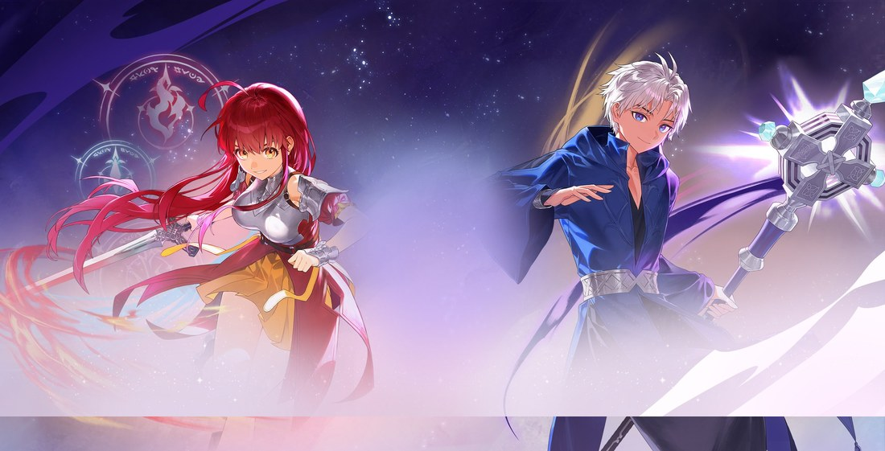
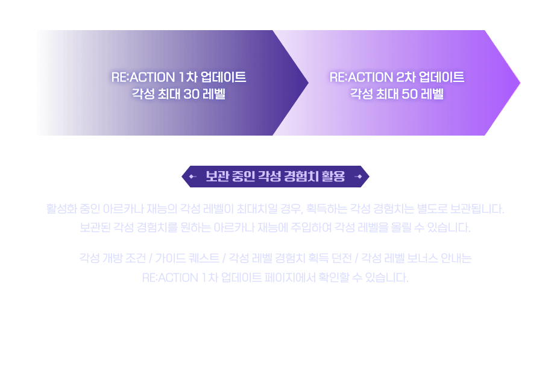
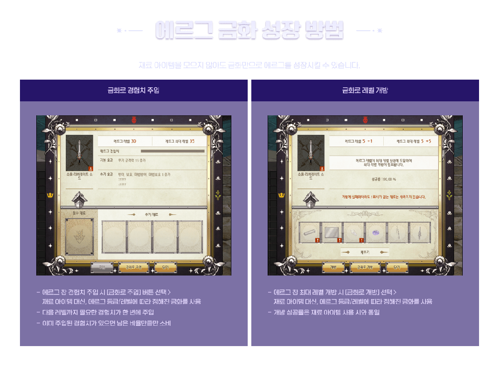
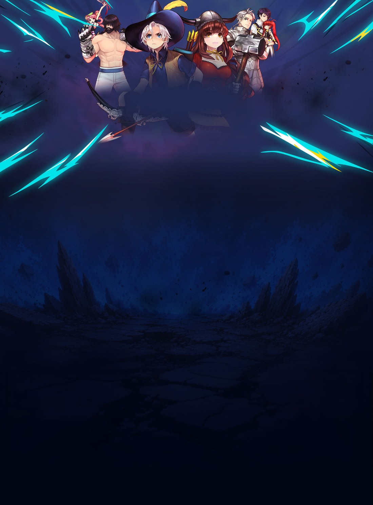
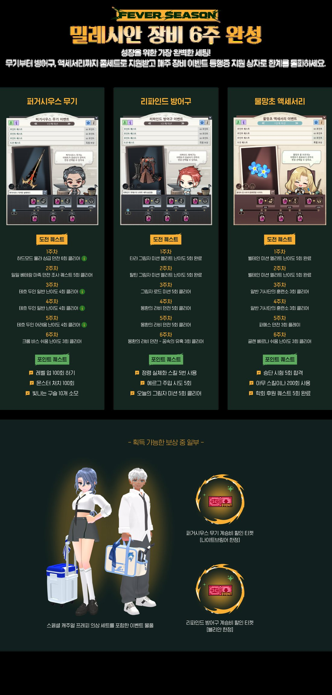

마비노기 RE:ACTION 2차 업데이트 아르카나 각성스킬 오검워드 총정리
해당 게임에는 확률형 아이템이 포함되어 있습니다.
얼마 전부터 마비노기 켜면 로그인 화면부터 분위기가 달라져 있길래 뭔가 했더니, RE:ACTION 2차 업데이트가 8월 13일에 들어왔더라고요. 저는 1차 때 아르카나 각성 처음 찍어보고 한동안 손을 못 대고 있었는데, 이번에 다시 접속해 각성 스킬 뜨는 거 보고 확 재미 붙어서 이것저것 눌러보다가 오늘 정리해서 가져와봤어요.

마비노기 최초의 아르카나 각성 스킬, 이번 2차 업데이트 핵심인데요.
이미지 출처: 마비노기 공식 RE:ACTION 2차 업데이트 페이지 · 네이버 본문엔 받아서 재업로드 권장
1차랑 2차, 헷갈리면 안 되는 부분부터 짚을게요
아르카나 각성 자체는 지난 7월 9일 1차 업데이트 때 이미 생긴 시스템이고, 이번 8월 13일 2차 업데이트는 그 위에 레벨 한도 확장과 각성 스킬을 얹은 거예요. 처음엔 "각성이 새로 생겼나?" 싶었는데, 찾아보니 틀 자체는 1차 때부터 있었고 2차에서 알맹이가 채워진 느낌이더라고요. "각성 처음 나왔어요"라 하면 틀린 얘기고, "한 단계 더 깊어졌어요" 정도로 이해하면 됩니다.
| 구분 | 1차(7/9) | 2차(8/13) |
|---|---|---|
| 각성 시스템 | 신설 | 유지 |
| 각성 최대 레벨 | 30 | 50 |
| 각성 스킬 | 없음 | 31레벨부터 신설 |
| 오검 워드 조합 | 있음 | 몇 가지 → 하나씩 더 |
각성 레벨 한도, 30에서 50까지 늘어났어요
이번 2차 업데이트로 아르카나 각성 최대 레벨이 기존 30레벨에서 50레벨로 확장됐어요. 1차 때 30 찍고 "더 못 올리나" 하고 방치해뒀던 분들도 많으실 텐데, 이제 20레벨 치가 더 열린 거죠. 각성 레벨이 이미 최대치였던 캐릭터는 모아둔 경험치가 보관돼 있다가 원하는 재능에 주입하면 바로 레벨을 올릴 수 있어요. 묵혀뒀던 경험치가 아깝지 않게 배려해준 느낌이라 이 부분은 만족스럽네요.

1차는 각성 최대 30레벨, 2차는 여기서 50레벨까지 늘어났어요.
이미지 출처: 마비노기 공식 RE:ACTION 2차 업데이트 페이지
각성 31레벨부터 생기는 각성 스킬, 이게 진짜 핵심이에요
각성 31레벨을 찍으면 아르카나 전용 '각성 스킬'을 하나 배우게 돼요. 정확한 데미지 배율은 공식이 공개하지 않아 숫자로 못 박긴 어렵지만, 직접 써보니 넓은 범위를 한 번에 쓸어버리면서 크리티컬로 꽂히고 시전 도중엔 맞아도 씹히는, 판을 뒤집는 한 방이라는 느낌이 옵니다. 아르카나마다 스킬 이름과 연출은 다른데(엘레멘탈 나이트 '엘레멘탈 카타클리즘', 세인트 바드 '성광의 협주곡', 다크 메이지 '도르카 임펄스'처럼), '강력한 한 방' 컨셉 자체는 공통이었어요.
사용 조건은 아래처럼 정리되는데요,
- 재사용 대기시간(쿨타임)은 300초
- 일반 필드에서는 횟수 제한 없이 쓸 수 있어요
- 미션·던전·보스 전투에서는 1회만 사용 가능해요
- 전투를 리트라이하거나 다음 보스로 넘어가면 사용 횟수가 초기화돼요
| 랭크 | 습득 각성 레벨 |
|---|---|
| F랭크 | 31 |
| C랭크 | 34 |
| 6랭크 | 40 |
| 1랭크 | 50 |
31에서 배우고 끝이 아니라, 50까지 올리는 동안 이 스킬 랭크가 계속 올라가는 구조더라고요.
필드에서는 마음껏 쓰다가, 진짜 중요한 던전이나 보스전에서는 한 방을 아껴뒀다가 결정적일 때 터뜨리라는 의도로 설계된 것 같아요. 처음엔 "왜 던전에서는 1회만 되지" 싶었는데, 몇 번 써보니 오히려 언제 쓸지 고민하는 재미가 생기네요.
오검 워드 조합, 이번엔 아르카나마다 하나씩 더 늘었어요
오검 워드도 아르카나별 '조합 효과' 시스템도 사실 1차 업데이트 때부터 있었어요. 여기서도 헷갈리기 쉬운 부분이 있는데요, 아르카나마다 원래 몇 가지 조합을 갖고 있었고, 이번 2차에서 하나씩 더 늘어난 거죠. '오검 워드가 이번에 처음 생겼다'고 알고 계셨다면 정정이 필요해요.
조합 방식은 간단한데요, 오검 워드 3개를 함께 장착하면 아르카나 전용 고유 효과가 발동하고, 워드 등급(엘리트·에픽·마스터)이 높을수록 효과도 강화된답니다. 새로 늘어난 조합 중 하나가 엘레멘탈 나이트의 '리스·티너·페헤'인데, 이 세 워드를 맞추면 라인 브레이크 스킬의 이동 범위나 재사용 조건이 바뀌면서 주력 스킬이 다르게 움직입니다. 아르카나마다 조합 워드와 효과가 다르니, 주력 아르카나부터 하나씩 맞춰보시길 추천드려요.
엘레멘탈 나이트 오검 워드 조합식과 효과 예시예요.
이미지 출처: 마비노기 공식 RE:ACTION 2차 업데이트 페이지
에르그, 이제 재료 없이 골드로도 키울 수 있어요
에르그 주입 창과 최대 레벨 개방 창에 '금화로 주입', '금화로 개방' 버튼이 생겨서, 재료 없이 골드만으로 성장을 진행할 수 있게 됐어요. 재료 파밍이 은근 시간 잡아먹는 부분이었는데 이 버튼 하나로 훅 넘어가더라고요. 다만 재료를 직접 모으는 것보다 총비용은 더 든다는 점은 알아두세요. 시간이 부족한 분들에겐 편의 기능이고, 알뜰하게 키우고 싶은 분들에겐 여전히 재료 파밍이 더 이득인 구조랍니다.
여기에 더해서 아르카나 각성 메뉴 안에 성장 관리 옵션도 같이 추가돼서, 예전보다 지금 내 각성이 어디까지 왔고 뭘 더 챙겨야 하는지 한눈에 보기 편해졌습니다.

에르그 창에 생긴 '금화로 주입' · '금화로 개방' 버튼이에요.
이미지 출처: 마비노기 공식 RE:ACTION 2차 업데이트 페이지
진행 중인 피버시즌도 같이 챙기세요
마비노기 FEVER SEASON은 2026년 7월 9일 점검 후부터 9월 10일 점검 전까지 이어지는 여름 성장 시즌인데요, 2차 업데이트와 별개로 진행 중이라 각성이나 에르그 손보는 김에 같이 챙기면 좋아요. 오랜만에 복귀한 분들도 부담 없이 시작하기 좋은 시즌이에요.
- 무기·방어구·펫 대여
- 수리비 무료
- 취향껏 고르는 선택 버프

이번 여름 내내 이어지는 마비노기 피버시즌이랍니다.
이미지 출처: 마비노기 공식 FEVER SEASON 페이지
카드 리셋 횟수가 늘고 신규 배율 강화권도 주는 블랙 콤보 카드 이벤트도 같이 진행 중이니 이 김에 확인해보시면 좋을 것 같아요.
밀레시안 장비 6주 완성, 지금 시작해도 풀세트는 챙길 수 있어요
피버시즌 안에서 제일 눈에 띄는 게 밀레시안 장비 6주 완성 이벤트예요. 퍼거시우스 무기·리파인드 방어구·물망초 액세서리, 이렇게 세 가지를 매주 미션을 완료하면 다음 장비를 받는 방식으로 순서대로 모아가는 구조거든요.
지금 시작해도 무기·방어구·액세서리 풀세트를 챙기는 건 충분히 가능해요. 종료일인 9월 10일 점검 전까지 여유가 있는 데다, 주차가 달력이 아니라 그 주 미션을 다 채워야 다음 주차로 넘어가는 방식이라 지금 시작해도 문제없어요. 다만 인챈트·세공까지 붙은 완전 강화 장비를 얻는 건 별개인데요, 이벤트로 받는 건 기본 장비 자체고 인챈트·세공은 따로 시간과 재료가 필요해요. "장비 획득"과 "완전 강화"는 다른 목표로 보시면 됩니다.

퍼거시우스 무기·리파인드 방어구·물망초 액세서리를 순서대로 모아가는 이벤트예요.
이미지 출처: 마비노기 공식 FEVER SEASON 페이지
자주 묻는 질문
Q. 1차 업데이트 때 각성을 안 찍어놨는데, 지금 시작해도 늦지 않을까요?
각성은 기간 한정이 아니라 상시 진행되는 성장 시스템이라 지금 시작해도 못 따라잡을 걱정은 안 해도 돼요. 다만 30에서 50레벨까지 정확히 얼마나 걸리는지 소요 시간은 공식이 수치로 공개하지 않았으니, 직접 플레이하며 체감하시는 수밖에 없네요.
Q. 오검 워드 조합, 꼭 정해진 대로 다 맞춰야 하나요?
안 맞추고 자유롭게 장착해도 게임 진행엔 문제없어요. 다만 3개를 세트로 맞추면 아르카나 전용 고유 효과가 추가로 열리는 구조라, 맞추는 쪽이 화력이나 활용 면에서 유리해요. 급하게 맞출 필요는 없고 갖고 있는 등급에 맞춰 천천히 채워가도 괜찮습니다.
마비노기 RE:ACTION 2차 업데이트 정리
정리하면 이번 2차 업데이트는 8월 13일 적용, 아르카나 각성 최대 레벨이 30에서 50으로 확장되고 31레벨부터 전용 각성 스킬(쿨타임 300초, 필드 무제한·던전과 보스는 1회)을 얻는다는 게 핵심입니다. 오검 워드 조합도 아르카나별로 하나씩 늘고, 에르그도 금화로 편하게 키울 수 있게 됐고요. 피버시즌·밀레시안 6주 완성 이벤트까지 함께 진행 중이니 이 기회에 한꺼번에 챙겨보세요. 저도 각성 스킬 재미 붙어서 당분간 마비노기 좀 더 파볼 계획입니다.
참고한 곳
· RE:ACTION 2차 업데이트 | 마비노기 (2026.08.18 기준)
· 마비노기 FEVER SEASON | 마비노기 (2026.08.18 기준)
· 마비노기 공식 유튜브
해당 게임에는 확률형 아이템이 포함되어 있습니다.